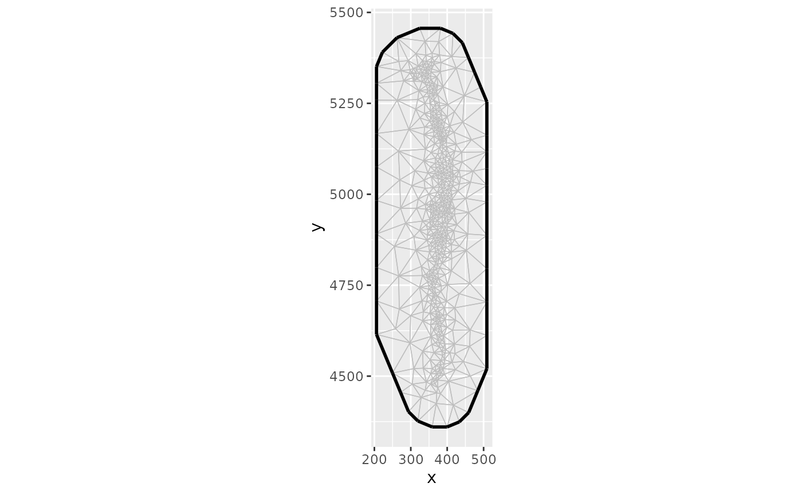
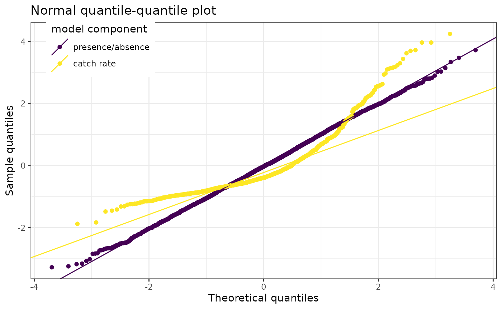
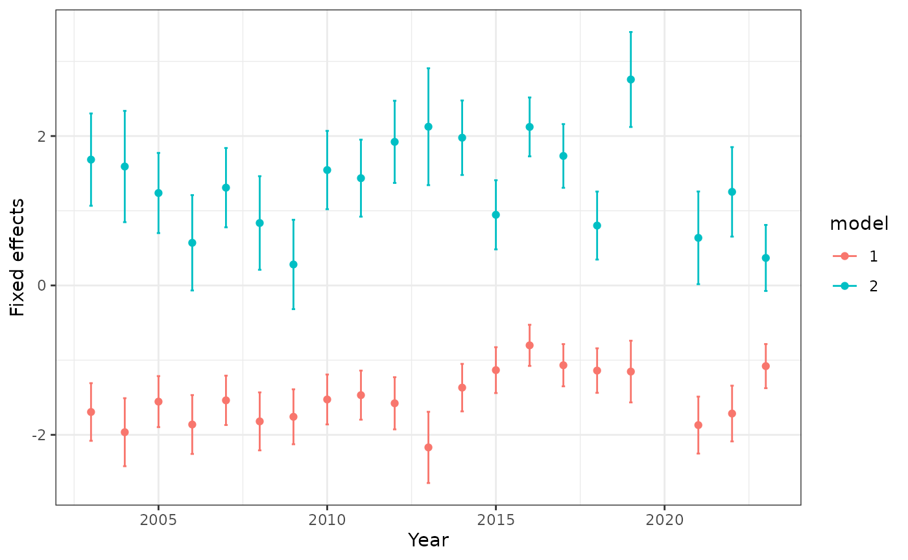
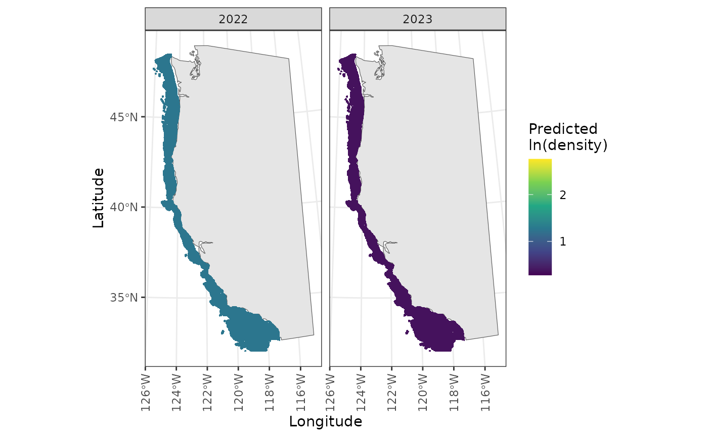
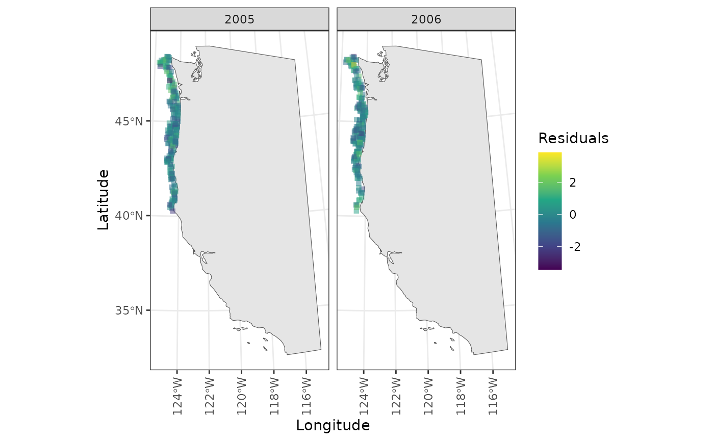

Overview
This vignette highlights the ability to generate coastwide indices
for stocks using the indexwc package.
Yellowtail rockfish example
As a case study, we’ll focus on yellowtail rockfish. The package
includes yellowtail, which is the yellowtail data from the
WCGBTS 2003 – 2023.
library(dplyr)
library(indexwc)
library(purrr)
library(sdmTMB)
library(tibble)
options(repos = c(CRAN = "https://cloud.r-project.org"))First we’ll load in the configuration file. This step is not needed –
and the formulas, etc. may be specified from scratch, but this file is
used to keep models reproducible across assessment cycles. The
configuration file brings in specific settings by survey and species
that are used to subset the data and define the parameterization of the
index estimation. This file is included as both an rda file
that is loaded with the package but is also available for users who
download the source code in the data-raw folder (download
the package to see this).
# Load from the rda file
configuration_ytk <- configuration |>
dplyr::filter(species == "yellowtail rockfish")The configuration file contains settings you may wish to change, including attributes of filters (years, latitudes, depths), and model components (anisotropy, knots, spatiotemporal effects, etc).
The configuration includes multiple entries for a single species for separate surveys and error distributions (e.g., delta-lognormal, delta-gamma, etc.).
In this example, we are going to only run a single-index for the Northwest Fisheries Science Center (NWFSC) West Coast Groundfish Bottom Trawl (WCGBT) survey (i.e., also referred to as the “NWFSC.Combo” survey in the data NWFSC data warehouse, or R package nwfscSurvey).
configuration_ytk_wcgbt <- configuration_ytk |>
dplyr::filter(source == "NWFSC.Combo" & family == "sdmTMB::delta_gamma()")Statistical model
For most indices developed on the west coast of the USA, the main
formula is usually something similar to the following, where
fyear represents a fixed year effect, and
pass_scaled is factor describing whether the haul is part
of pass 1 (early season) or pass 2 (late season).
There are two unique index formula’s available for yellowtail rockfish:
configuration_ytk_wcgbt[, "formula"]
#> [1] "catch_weight ~ 0 + fyear*split_mendocino + pass_scaled"
#> [2] "catch_weight ~ 0 + fyear + pass_scaled"we are going to use the default configuration. Please see the vignette on multiple area indices for an example run with the other formulation available for yellowtail rockfish.
configuration_to_run <- configuration_ytk_wcgbt |>
dplyr::filter(
formula == "catch_weight ~ 0 + fyear + pass_scaled"
)Preparing the data
This block pulls trawl survey from the NWFSC data warehouse and applies filters (based on latitude, depth, and year) to each observation.
data("yellowtail")
data <- yellowtail |>
dplyr::filter(
depth <= configuration_to_run$min_depth,
depth >= configuration_to_run$max_depth,
latitude >= configuration_to_run$min_latitude,
latitude <= configuration_to_run$max_latitude,
year >= configuration_to_run$min_year,
year <= configuration_to_run$max_year
)The filtered data has several thousand less rows than the raw data.
Fitting the model with indexwc and sdmTMB
Now we can use the indexwc package to fit the model. The
indexwc package acts as a wrapper for sdmTMB
here, combining the estimation process (sdmTMB()) with the
index generation (get_index()).
A key point to highlight is that in this code, we use
sdmTMBcontrol() to pass in a list that contains the
variables above we use to map off and initialize the parameters. For
datasets without missing values, you may not want to include this
sdmTMBcontrol() line, but it may be useful to adjust the
newton_loops, etc.
# the character string needs to be parsed before used as input
family_obj <- eval(rlang::parse_expr(configuration_to_run$family))
fit <- run_sdmtmb(dir_main = NULL,
data,
family = family_obj,
formula = configuration_to_run$formula,
n_knots = configuration_to_run$knots,
share_range = configuration_to_run$share_range,
sdmtmb_control = sdmTMB::sdmTMBcontrol(newton_loops = 3))In the above example, dir is specified to be NULL, so
the fitted object will be returned. But if this is a directory name, it
will be created and used to save data and the model fit.
Examining diagnostics
All diagnostics and plots are generated by the
diagnose() function. This function takes a fitted object
and prediction grid as input, and optionally a directory name
(dir) for saving results to.
For simplicity and speed, we can change simplify our previous yellowtail model to be spatial only.
family_obj <- eval(rlang::parse_expr(configuration_to_run$family))
fit_simple <- run_sdmtmb(
dir_main = NULL,
data,
family = family_obj,
formula = configuration_to_run$formula,
n_knots = configuration_to_run$knots,
share_range = configuration_to_run$share_range,
spatial = "off",
spatiotemporal = "off",
sdmtmb_control = sdmTMB::sdmTMBcontrol(newton_loops = 1)
)Next, we can run the diagnostics with the California Current prediction grid
pred_grid <- sdmTMB::replicate_df(california_current_grid,
time_name = "year",
time_values = unique(data$year))
pred_grid$fyear <- as.factor(pred_grid$year)
diagnostics <- diagnose(dir = NULL,
fit = fit_simple,
prediction_grid = pred_grid)If dir is specified, output and diagnostics for all
models and predictions are stored in a folder that indexwc
creates. If no directory is specified
diagnose(dir = NULL,...) then named list is returned.
Stepping through what elements are output:
The sdmTMB::sanity() checks can be accessed with
diagnostics$sanity
#> names logical text
#> hessian_ok hessian_ok TRUE TRUE
#> eigen_values_ok eigen_values_ok TRUE TRUE
#> nlminb_ok nlminb_ok TRUE TRUE
#> range_ok range_ok TRUE TRUE
#> gradients_ok gradients_ok TRUE TRUE
#> se_magnitude_ok se_magnitude_ok TRUE TRUE
#> se_na_ok se_na_ok TRUE TRUE
#> sigmas_ok sigmas_ok TRUE TRUE
#> all_ok all_ok TRUE TRUEThe model is returned with
diagnostics$model
#> [1] "delta_gamma(link1 = 'logit', link2 = 'log')"The formula is returned with
diagnostics$formula
#> catch_weight ~ 0 + fyear + pass_scaled
#> <environment: 0x5637269c0fd0>The log-likelihood and AIC are returned with
diagnostics$loglike
#> 'log Lik.' -123.9427 (df=43)
diagnostics$aic
#> [1] 333.8853A tibble with fixed and random effects (with standard error and confidence intervals) is returned with
diagnostics$effects
#> # A tibble: 43 × 6
#> term estimate std.error conf.low conf.high model
#> <chr> <dbl> <dbl> <dbl> <dbl> <int>
#> 1 fyear2003 -1.69 0.193 -2.07 -1.32 1
#> 2 fyear2004 -1.96 0.228 -2.41 -1.52 1
#> 3 fyear2005 -1.56 0.171 -1.89 -1.22 1
#> 4 fyear2006 -1.86 0.197 -2.25 -1.48 1
#> 5 fyear2007 -1.54 0.165 -1.86 -1.21 1
#> 6 fyear2008 -1.82 0.194 -2.20 -1.44 1
#> 7 fyear2009 -1.76 0.184 -2.12 -1.40 1
#> 8 fyear2010 -1.53 0.167 -1.85 -1.20 1
#> 9 fyear2011 -1.47 0.164 -1.79 -1.15 1
#> 10 fyear2012 -1.58 0.175 -1.92 -1.24 1
#> # ℹ 33 more rowsThe SPDE mesh plot can be accessed with
diagnostics$mesh_plot
The QQ plot (appearing as a single plot when a non-delta family is used, or 2 plots when a delta family is used) is accessed with
diagnostics$qq_plot
When anisotropy is not included (as in our model) no plot is available, but when included it can be seen by accessing
diagnostics$anisotropy_plot
#> NULLA plot of the fixed effects parameters can be accessed with
diagnostics$fixed_effects_plot
Density plots are made separately for each year, and stored 2 per page in a list of lists. They can be accessed with
diagnostics$density_plots[[10]]
Maps are also made of the residuals. Accessing these can be a little funny, but is done with pagination
plot1 <- diagnostics$residual_maps_by_year[[1]]
ggforce::n_pages(plot1) # check number of pages
#> [1] 10
# View page 2
print(plot1 + ggforce::facet_wrap_paginate("year", nrow = 1, ncol = 2, page = 2))
For reproducibility, the diagnostics list also includes a time stamp
diagnostics$date
#> [1] "2026-01-23"and the session info with
diagnostics$session_info
#> R version 4.5.2 (2025-10-31)
#> Platform: x86_64-pc-linux-gnu
#> Running under: Ubuntu 24.04.3 LTS
#>
#> Matrix products: default
#> BLAS: /usr/lib/x86_64-linux-gnu/openblas-pthread/libblas.so.3
#> LAPACK: /usr/lib/x86_64-linux-gnu/openblas-pthread/libopenblasp-r0.3.26.so; LAPACK version 3.12.0
#>
#> locale:
#> [1] LC_CTYPE=C.UTF-8 LC_NUMERIC=C LC_TIME=C.UTF-8
#> [4] LC_COLLATE=C.UTF-8 LC_MONETARY=C.UTF-8 LC_MESSAGES=C.UTF-8
#> [7] LC_PAPER=C.UTF-8 LC_NAME=C LC_ADDRESS=C
#> [10] LC_TELEPHONE=C LC_MEASUREMENT=C.UTF-8 LC_IDENTIFICATION=C
#>
#> time zone: UTC
#> tzcode source: system (glibc)
#>
#> attached base packages:
#> [1] stats graphics grDevices utils datasets methods base
#>
#> other attached packages:
#> [1] tibble_3.3.1 sdmTMB_0.8.1 purrr_1.2.1 indexwc_0.8 dplyr_1.1.4
#>
#> loaded via a namespace (and not attached):
#> [1] gtable_0.3.6 raster_3.6-32 TMB_1.9.19 xfun_0.56
#> [5] bslib_0.9.0 ggplot2_4.0.1 htmlwidgets_1.6.4 lattice_0.22-7
#> [9] vctrs_0.7.1 tools_4.5.2 Rdpack_2.6.5 generics_0.1.4
#> [13] proxy_0.4-29 pkgconfig_2.0.3 Matrix_1.7-4 KernSmooth_2.23-26
#> [17] RColorBrewer_1.1-3 S7_0.2.1 desc_1.4.3 assertthat_0.2.1
#> [21] lifecycle_1.0.5 compiler_4.5.2 farver_2.1.2 fmesher_0.6.1
#> [25] textshaping_1.0.4 terra_1.8-93 ggforce_0.5.0 codetools_0.2-20
#> [29] htmltools_0.5.9 class_7.3-23 sass_0.4.10 yaml_2.3.12
#> [33] pillar_1.11.1 pkgdown_2.2.0 jquerylib_0.1.4 tidyr_1.3.2
#> [37] MASS_7.3-65 classInt_0.4-11 cachem_1.1.0 wk_0.9.5
#> [41] viridis_0.6.5 reformulas_0.4.3.1 nlme_3.1-168 inlabru_2.13.0
#> [45] tidyselect_1.2.1 digest_0.6.39 sf_1.0-24 labeling_0.4.3
#> [49] splines_4.5.2 polyclip_1.10-7 rprojroot_2.1.1 fastmap_1.2.0
#> [53] grid_4.5.2 here_1.0.2 cli_3.6.5 magrittr_2.0.4
#> [57] broom_1.0.11 e1071_1.7-17 withr_3.0.2 scales_1.4.0
#> [61] backports_1.5.0 sp_2.2-0 rmarkdown_2.30 otel_0.2.0
#> [65] gridExtra_2.3 ragg_1.5.0 evaluate_1.0.5 knitr_1.51
#> [69] rbibutils_2.4.1 viridisLite_0.4.2 s2_1.1.9 mgcv_1.9-3
#> [73] rlang_1.1.7 Rcpp_1.1.1 glue_1.8.0 DBI_1.2.3
#> [77] tweenr_2.0.3 jsonlite_2.0.0 R6_2.6.1 systemfonts_1.3.1
#> [81] fs_1.6.6 units_1.0-0The original data is returned (with residual values added) as
diagnostics$data_with_residuals
#> # A tibble: 4,521 × 21
#> year fyear survey_name common_name catch_numbers catch_weight effort
#> <int> <fct> <chr> <chr> <dbl> <dbl> <dbl>
#> 1 2003 2003 WCGBTS yellowtail rockfish 0 0 0.0177
#> 2 2003 2003 WCGBTS yellowtail rockfish 703 1.13 0.0196
#> 3 2003 2003 WCGBTS yellowtail rockfish 0 0 0.0224
#> 4 2003 2003 WCGBTS yellowtail rockfish 0 0 0.0207
#> 5 2003 2003 WCGBTS yellowtail rockfish 0 0 0.0187
#> 6 2003 2003 WCGBTS yellowtail rockfish 186 0.248 0.0209
#> 7 2003 2003 WCGBTS yellowtail rockfish 0 0 0.0216
#> 8 2003 2003 WCGBTS yellowtail rockfish 0 0 0.0225
#> 9 2003 2003 WCGBTS yellowtail rockfish 0 0 0.0175
#> 10 2003 2003 WCGBTS yellowtail rockfish 0 0 0.0201
#> # ℹ 4,511 more rows
#> # ℹ 14 more variables: pass_scaled <dbl>, vessel_year <fct>, longitude <dbl>,
#> # latitude <dbl>, depth <dbl>, depth_scaled <dbl[,1]>,
#> # depth_scaled_squared <dbl[,1]>, x <dbl>, y <dbl>, split_mendocino <chr>,
#> # residuals <dbl>, residuals2 <dbl>, X <dbl>, Y <dbl>Finally, predictions on the survey grid (or other data passed in) are stored in a dataframe
diagnostics$predictions
#> # A tibble: 912,560 × 60
#> # Rowwise:
#> OBJECTID Point_id Northin_m Easting_m latitude longitude Ngdc_m Hard Mixed
#> <int> <int> <int> <int> <dbl> <dbl> <int> <dbl> <dbl>
#> 1 1 43127 4000 581500 32.0 -120. -1414 NA NA
#> 2 2 43128 4000 583500 32.0 -120. -1692 NA NA
#> 3 3 43129 4000 585500 32.0 -120. -1508 NA NA
#> 4 4 43130 4000 587500 32.0 -120. -1324 NA NA
#> 5 5 43131 4000 589500 32.0 -119. -1160 NA NA
#> 6 6 43132 4000 591500 32.0 -119. -1205 NA NA
#> 7 7 43133 4000 619500 32.0 -119. -1600 NA NA
#> 8 8 43134 4000 621500 32.0 -119. -1573 NA NA
#> 9 9 43135 4000 623500 32.0 -119. -1637 NA NA
#> 10 10 43136 4000 625500 32.0 -119. -1568 NA NA
#> # ℹ 912,550 more rows
#> # ℹ 51 more variables: Soft <dbl>, Slope <fct>, Substrate <int>,
#> # Confidence <int>, Grain <dbl>, Srtm_m <int>, Rock_dist_ <int>,
#> # Temp03krig <dbl>, Temp04krig <dbl>, Temp05krig <dbl>, Temp06krig <dbl>,
#> # Temp07krig <dbl>, Temp08krig <dbl>, Temp09krig <dbl>, Temp10krig <dbl>,
#> # Temp11krig <dbl>, Tempallyr <dbl>, Cowcod <int>, propInCCA <dbl>,
#> # propInWCGBTS <dbl>, propInTriennial <dbl>, propInSlope98_00 <dbl>, …Calculating indices
Last, we can use the calc_index_areas function to
calculate indices, with associated uncertainty. We can calculate areas
for any region in the following list:
available_areas()
#> [1] "Coastwide" "WA"
#> [3] "OR" "CA"
#> [5] "North of Point Conception" "South of Point Conception"
#> [7] "North of Cape Mendocino" "South of Cape Mendocino"
#> [9] "North of Monterey Bay" "South of Monterey Bay"By default, the Coastwide index and 3 state indices are generated, but these indices may be calculated simultaneously (note: there is not really a speed up of doing several at the same time, because they are done sequentially). Again we’ll leave the ‘dir’ argument set to NULL and return everything
index <- calc_index_areas(
data=fit_simple$data,
fit = fit_simple,
prediction_grid=pred_grid,
boundaries = c("Coastwide"),
dir = NULL)The indices may be visualized by extracting the time series plot
index$plot_indices
or more custom code could be used to make a plot based off of
index$indices
#> area year est lwr upr log_est se
#> 1 Coastwide 2003 45776.204 23080.8171 90787.983 10.731520 0.3493751
#> 2 Coastwide 2004 33066.659 14444.4891 75696.961 10.406281 0.4225652
#> 3 Coastwide 2005 32881.305 18155.7586 59550.265 10.400660 0.3030242
#> 4 Coastwide 2006 13025.652 6409.1224 26472.832 9.474676 0.3618425
#> 5 Coastwide 2007 35819.918 19968.1294 64255.721 10.486259 0.2981517
#> 6 Coastwide 2008 17604.221 8779.0919 35300.757 9.775894 0.3549890
#> 7 Coastwide 2009 10652.964 5495.7664 20649.649 9.273593 0.3376900
#> 8 Coastwide 2010 45785.712 25636.7911 81770.429 10.731727 0.2958950
#> 9 Coastwide 2011 43052.639 24379.2254 76029.066 10.670179 0.2901544
#> 10 Coastwide 2012 64019.558 34820.4069 117704.077 11.066944 0.3107123
#> 11 Coastwide 2013 47017.098 19626.4773 112633.943 10.758267 0.4457387
#> 12 Coastwide 2014 80231.052 46372.3624 138811.596 11.292666 0.2797026
#> 13 Coastwide 2015 34300.859 20654.4247 56963.529 10.442926 0.2588011
#> 14 Coastwide 2016 141452.302 92131.7924 217175.343 11.859718 0.2187502
#> 15 Coastwide 2017 79215.503 49711.0954 126231.295 11.279927 0.2377308
#> 16 Coastwide 2018 29560.544 17966.3063 48636.919 10.294196 0.2540569
#> 17 Coastwide 2019 206798.126 103227.6334 414283.109 12.239498 0.3544996
#> 18 Coastwide 2021 13823.626 6943.0633 27522.814 9.534134 0.3513514
#> 19 Coastwide 2022 29214.635 15041.7082 56741.886 10.282425 0.3387016
#> 20 Coastwide 2023 20043.525 12352.7782 32522.472 9.905661 0.2469561
#> 21 WA 2003 14344.548 7232.6639 28449.555 9.571125 0.3493751
#> 22 WA 2004 10361.853 4526.3621 23720.594 9.245886 0.4225652
#> 23 WA 2005 10303.770 5689.3350 18660.824 9.240265 0.3030242
#> 24 WA 2006 4081.752 2008.3790 8295.594 8.314282 0.3618425
#> 25 WA 2007 11224.621 6257.2641 20135.337 9.325865 0.2981517
#> 26 WA 2008 5516.504 2751.0387 11061.936 8.615500 0.3549890
#> 27 WA 2009 3338.240 1722.1674 6470.827 8.113199 0.3376900
#> 28 WA 2010 14347.528 8033.6105 25623.791 9.571333 0.2958950
#> 29 WA 2011 13491.085 7639.5365 23824.663 9.509784 0.2901544
#> 30 WA 2012 20061.333 10911.4119 36884.051 9.906549 0.3107123
#> 31 WA 2013 14733.398 6150.2032 35295.261 9.597872 0.4457387
#> 32 WA 2014 25141.408 14531.3622 43498.357 10.132271 0.2797026
#> 33 WA 2015 10748.605 6472.3234 17850.237 9.282531 0.2588011
#> 34 WA 2016 44325.855 28870.6544 68054.622 10.699323 0.2187502
#> 35 WA 2017 24823.173 15577.5961 39556.162 10.119533 0.2377308
#> 36 WA 2018 9263.168 5629.9677 15240.990 9.133801 0.2540569
#> 37 WA 2019 64802.790 32347.6755 129820.816 11.079104 0.3544996
#> 38 WA 2021 4331.807 2175.6961 8624.619 8.373740 0.3513514
#> 39 WA 2022 9154.773 4713.5082 17780.783 9.122031 0.3387016
#> 40 WA 2023 6280.890 3870.8982 10191.325 8.745267 0.2469561
#> 41 OR 2003 23187.711 11691.4744 45988.206 10.051378 0.3493751
#> 42 OR 2004 16749.753 7316.7849 38343.923 9.726139 0.4225652
#> 43 OR 2005 16655.863 9196.7102 30164.894 9.720518 0.3030242
#> 44 OR 2006 6598.080 3246.5094 13409.683 8.794534 0.3618425
#> 45 OR 2007 18144.403 10114.7577 32548.420 9.806117 0.2981517
#> 46 OR 2008 8917.331 4447.0058 17881.425 9.095752 0.3549890
#> 47 OR 2009 5396.207 2783.8534 10459.978 8.593452 0.3376900
#> 48 OR 2010 23192.527 12986.1904 41420.409 10.051585 0.2958950
#> 49 OR 2011 21808.103 12349.1767 38512.149 9.990037 0.2901544
#> 50 OR 2012 32428.792 17638.1058 59622.421 10.386802 0.3107123
#> 51 OR 2013 23816.280 9941.6956 57054.170 10.078125 0.4457387
#> 52 OR 2014 40640.645 23489.6921 70314.331 10.612524 0.2797026
#> 53 OR 2015 17374.931 10462.3972 28854.595 9.762784 0.2588011
#> 54 OR 2016 71651.968 46668.9063 110009.102 11.179576 0.2187502
#> 55 OR 2017 40126.223 25180.9109 63941.841 10.599785 0.2377308
#> 56 OR 2018 14973.748 9100.7441 24636.792 9.614054 0.2540569
#> 57 OR 2019 104752.573 52289.4499 209853.071 11.559356 0.3544996
#> 58 OR 2021 7002.290 3516.9746 13941.546 8.853992 0.3513514
#> 59 OR 2022 14798.530 7619.3033 28742.323 9.602283 0.3387016
#> 60 OR 2023 10152.949 6257.2391 16474.098 9.225519 0.2469561
#> 61 CA 2003 8243.944 4156.6788 16350.222 9.017234 0.3493751
#> 62 CA 2004 5955.053 2601.3421 13632.444 8.691995 0.4225652
#> 63 CA 2005 5921.672 3269.7134 10724.548 8.686374 0.3030242
#> 64 CA 2006 2345.820 1154.2340 4767.555 7.760390 0.3618425
#> 65 CA 2007 6450.894 3596.1075 11571.964 8.771974 0.2981517
#> 66 CA 2008 3170.386 1581.0474 6357.397 8.061609 0.3549890
#> 67 CA 2009 1918.517 989.7455 3718.844 7.559308 0.3376900
#> 68 CA 2010 8245.657 4616.9902 14726.229 9.017442 0.2958950
#> 69 CA 2011 7753.451 4390.5122 13692.254 8.955893 0.2901544
#> 70 CA 2012 11529.433 6270.8892 21197.605 9.352658 0.3107123
#> 71 CA 2013 8467.420 3534.5786 20284.512 9.043981 0.4457387
#> 72 CA 2014 14448.999 8351.3081 24998.908 9.578380 0.2797026
#> 73 CA 2015 6177.323 3719.7041 10258.696 8.728640 0.2588011
#> 74 CA 2016 25474.479 16592.2318 39111.620 10.145432 0.2187502
#> 75 CA 2017 14266.107 8952.5884 22733.292 9.565642 0.2377308
#> 76 CA 2018 5323.628 3235.5945 8759.138 8.579910 0.2540569
#> 77 CA 2019 37242.762 18590.5080 74609.222 10.525213 0.3544996
#> 78 CA 2021 2489.529 1250.3926 4956.648 7.819849 0.3513514
#> 79 CA 2022 5261.333 2708.8967 10218.780 8.568140 0.3387016
#> 80 CA 2023 3609.686 2224.6410 5857.049 8.191376 0.2469561
#> se_natural type
#> 1 45776.204 index
#> 2 33066.659 index
#> 3 32881.305 index
#> 4 13025.652 index
#> 5 35819.918 index
#> 6 17604.221 index
#> 7 10652.964 index
#> 8 45785.712 index
#> 9 43052.639 index
#> 10 64019.558 index
#> 11 47017.098 index
#> 12 80231.052 index
#> 13 34300.859 index
#> 14 141452.302 index
#> 15 79215.503 index
#> 16 29560.544 index
#> 17 206798.126 index
#> 18 13823.626 index
#> 19 29214.635 index
#> 20 20043.525 index
#> 21 14344.548 index
#> 22 10361.853 index
#> 23 10303.770 index
#> 24 4081.752 index
#> 25 11224.621 index
#> 26 5516.504 index
#> 27 3338.240 index
#> 28 14347.528 index
#> 29 13491.085 index
#> 30 20061.333 index
#> 31 14733.398 index
#> 32 25141.408 index
#> 33 10748.605 index
#> 34 44325.855 index
#> 35 24823.173 index
#> 36 9263.168 index
#> 37 64802.790 index
#> 38 4331.807 index
#> 39 9154.773 index
#> 40 6280.890 index
#> 41 23187.711 index
#> 42 16749.753 index
#> 43 16655.863 index
#> 44 6598.080 index
#> 45 18144.403 index
#> 46 8917.331 index
#> 47 5396.207 index
#> 48 23192.527 index
#> 49 21808.103 index
#> 50 32428.792 index
#> 51 23816.280 index
#> 52 40640.645 index
#> 53 17374.931 index
#> 54 71651.968 index
#> 55 40126.223 index
#> 56 14973.748 index
#> 57 104752.573 index
#> 58 7002.290 index
#> 59 14798.530 index
#> 60 10152.949 index
#> 61 8243.944 index
#> 62 5955.053 index
#> 63 5921.672 index
#> 64 2345.820 index
#> 65 6450.894 index
#> 66 3170.386 index
#> 67 1918.517 index
#> 68 8245.657 index
#> 69 7753.451 index
#> 70 11529.433 index
#> 71 8467.420 index
#> 72 14448.999 index
#> 73 6177.323 index
#> 74 25474.479 index
#> 75 14266.107 index
#> 76 5323.628 index
#> 77 37242.762 index
#> 78 2489.529 index
#> 79 5261.333 index
#> 80 3609.686 indexSaving output
As demonstrated above, there are a lot of plots and diagnostics that
can be inspected, and in many cases we might want to save everything.
The save_index_outputs function in indexwc
will write everything locally (for the directory structure, see
?save_index_outputs)
save_index_outputs(
fit = fit_simple,
diagnostics = diagnostics,
indices = index,
dir_main = paste0(getwd(), "/yellowtail_example")
)